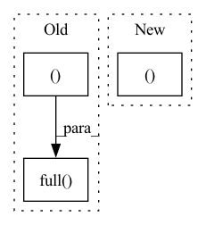

Pattern ID :15007
Before Change
img = torch.randn(shape, device=device)
for i in tqdm(reversed(range(0, self.num_timesteps)), desc="sampling loop time step", total=self.num_timesteps):
img = self.p_sample(img, torch.full( (b, device=device, dtype=torch.long) )
img = unnormalize_to_zero_to_one(img)
return imgAfter Change
@torch.no_grad()
def p_sample_loop(self, shape):
batch, device = shape[0], self.betas.device
img = torch.randn(shape, device=device)
In pattern: SUPERPATTERN
Frequency: 8
Non-data size: 3
Instances Fragment ID: 50446753
Project Name: lucidrains/denoising-diffusion-pytorch
Commit Name: 931a5af2c3271a7f12a951763cd9c68f9ea49a23
Time: 2022-07-09
Author: lucidrains@gmail.com
File Name: denoising_diffusion_pytorch/denoising_diffusion_pytorch.py
M Class Name: GaussianDiffusion
N Class Name: GaussianDiffusion
M Method Name: p_sample_loop(2)
N Method Name: p_sample_loop(2)
M Parent Class: nn.Module
N Parent Class: nn.Module
M File Name: denoising_diffusion_pytorch/denoising_diffusion_pytorch.py
N File Name: denoising_diffusion_pytorch/denoising_diffusion_pytorch.py
M Start Line: 496
M End Line: 502
N Start Line: 525
N End Line: 530
Before Change
@torch.no_grad()
def p_sample(self, x, t: int, x_self_cond = None, clip_denoised = True):
b, *_, device = *x.shape, x.device
batched_times = torch.full( (x.shape[0], device = x.device, dtype = torch.long)
model_mean, _, model_log_variance, x_start = self.p_mean_variance(x = x, t = batched_times, x_self_cond = x_self_cond, clip_denoised = clip_denoised)
noise = torch.randn_like(x) if t > 0 else 0. // no noise if t == 0
pred_img = model_mean + (0.5 * model_log_variance).exp() * noise
return pred_img, x_startAfter Change
noise = torch.randn_like(x)
// no noise when t == 0
is_last_sampling_timestep = t_next == 0
nonzero_mask = (1 - is_last_sampling_timestep.float()).reshape(b, *((1 Fragment ID: 50446752
Project Name: lucidrains/bit-diffusion
Commit Name: 7b25c9d18c4aa4200c7df429ffa7815641f67021
Time: 2022-08-17
Author: lucidrains@gmail.com
File Name: bit_diffusion/bit_diffusion.py
M Class Name: BitDiffusion
N Class Name: BitDiffusion
M Method Name: p_sample(6)
N Method Name: p_sample(5)
M Parent Class: nn.Module
N Parent Class: nn.Module
M File Name: bit_diffusion/bit_diffusion.py
N File Name: bit_diffusion/bit_diffusion.py
M Start Line: 497
M End Line: 501
N Start Line: 518
N End Line: 526
Before Change
SqueezeExcitation(width, width // 4),
nn.Conv2d(width, width, 1)
)
self.layer_scale = nn.Parameter(torch.full( (1,width,1,1 ), layer_scale_init) )
def forward(self, x: torch.Tensor):
// (N, C, H, W)After Change
SqueezeExcitation(embed_dim, embed_dim // 4),
nn.Conv2d(embed_dim, embed_dim, 1)
)
self.layer_scale = nn.Parameter(torch.ones((1,embed_dim,1,1 )) * layer_scale_init)
def forward(self, x: torch.Tensor):
// (N, C, H, W) Fragment ID: 50446738
Project Name: gau-nernst/vision-toolbox
Commit Name: 67e7e48c91632649ba08fc5848425c45fcbb8649
Time: 2022-02-20
Author: gau.nernst@yahoo.com.sg
File Name: vision_toolbox/backbones/patchconvnet.py
M Class Name: PatchConvBlock
N Class Name: PatchConvBlock
M Method Name: __init__(3)
N Method Name: __init__(3)
M Parent Class: nn.Module
N Parent Class: nn.Module
M File Name: vision_toolbox/backbones/patchconvnet.py
N File Name: vision_toolbox/backbones/patchconvnet.py
M Start Line: 44
M End Line: 44
N Start Line: 66
N End Line: 66
Before Change
// get times and noise levels
times = torch.full( (batch, device = device, dtype = torch.long)
log_snrs = self.get_condition(times)
x_start, pred_noise = self.model_predictions(img, log_snrs, x_start)
After Change
padded_log_snr, padded_log_snr_next = map(partial(right_pad_dims_to, img), (log_snr, log_snr_next))
_, alpha = log_snr_to_alpha_sigma(padded_log_snr)
_, alpha_next = log_snr_to_alpha_sigma(padded_log_snr_next)
// add the time delay Fragment ID: 50446757
Project Name: lucidrains/bit-diffusion
Commit Name: f9bf8cd026646bda1a378ad35c9f0a91b124a433
Time: 2022-08-17
Author: lucidrains@gmail.com
File Name: bit_diffusion/bit_diffusion.py
M Class Name: BitDiffusion
N Class Name: BitDiffusion
M Method Name: ddim_sample(2)
N Method Name: ddim_sample(3)
M Parent Class: nn.Module
N Parent Class: nn.Module
M File Name: bit_diffusion/bit_diffusion.py
N File Name: bit_diffusion/bit_diffusion.py
M Start Line: 549
M End Line: 579
N Start Line: 553
N End Line: 584
Before Change
def get_loss(self, examples: Iterable[Example], loss) -> Tuple[float, float]:
Find the loss and gradient of loss for the batch of documents and
their predicted scores.
return loss, np.full(() , fill_value=1)
def initialize(
self,
get_examples: Callable[[], Iterable[Example]],After Change
def get_loss(self, examples: Iterable[Example], loss) -> Tuple[float, float]:
Find the loss and gradient of loss for the batch of documents and
their predicted scores.
return float(loss.item()), self.model.ops.xp.array([1])
def initialize(
self,
get_examples: Callable[[], Iterable[Example]], Fragment ID: 50446756
Project Name: aphp/edsnlp
Commit Name: a391a3d6da829e092777cf3be45c1d215673ea16
Time: 2022-08-19
Author: “perceval.wajsburt@sorbonne-universite.fr”
File Name: edsnlp/pipelines/trainable/nested_ner.py
M Class Name: TrainableNer
N Class Name: TrainableNer
M Method Name: get_loss(3)
N Method Name: get_loss(3)
M Parent Class: TrainablePipe
N Parent Class: TrainablePipe
M File Name: edsnlp/pipelines/trainable/nested_ner.py
N File Name: edsnlp/pipelines/trainable/nested_ner.py
M Start Line: 284
M End Line: 284
N Start Line: 285
N End Line: 285
Before Change
torch.empty(2, 3),
torch.empty_like(torch.empty(2, 3), dtype=torch.int64),
torch.empty_strided((2, 3), (1, 2)),
torch.full( (2, 3 ), 3.141592) ,
torch.full_like(torch.full((2, 3), 3.141592), 2.71828),
torch.quantize_per_tensor(
torch.tensor([-1.0, 0.0, 1.0, 2.0]), 0.1, 10, torch.quint8After Change
torch.quint8,
)
return (
torch.tensor([[0.1, 1.2], [2.2, 3.1], [4.9, 5.2]]),
// torch.sparse_coo_tensor(i, v, [2, 3]), // not work for iOS
torch.as_tensor([1, 2, 3]),
torch.as_strided(torch.randn(3, 3), (2, 2), (1, 2)),
torch.zeros(2, 3),
torch.zeros((2, 3)),
torch.zeros([2, 3], out=i),
torch.zeros(5),
torch.zeros_like(torch.empty(2, 3)),
torch.ones(2, 3),
torch.ones((2, 3)),
torch.ones([2, 3]),
torch.ones(5),
torch.ones_like(torch.empty(2, 3)),
torch.arange(5),
torch.arange(1, 4),
torch.arange(1, 2.5, 0.5),
torch.range(1, 4),
torch.range(1, 4, 0.5),
torch.linspace(3.0, 3.0, steps=1),
torch.logspace(start=2, end=2, steps=1, base=2.0),
torch.eye(3),
torch.empty(2, 3),
torch.empty_like(torch.empty(2, 3), dtype=torch.int64),
torch.empty_strided((2, 3), (1, 2)),
torch.full((2, 3), 3.141592),
torch.full_like(torch.full((2, 3), 3.141592), 2.71828),
torch.quantize_per_tensor(
torch.tensor([-1.0, 0.0, 1.0, 2.0]), 0.1, 10, torch.quint8
),
torch.dequantize(quantized),
torch.complex(real, imag),
torch.polar(real, imag),
torch.heaviside(inp, values) ,
)
Fragment ID: 50446740
Project Name: pytorch/pytorch
Commit Name: 33b9726e6b3b11902f62b85f1e34fe0599ae17f5
Time: 2022-03-29
Author: pytorchmergebot@users.noreply.github.com
File Name: test/mobile/model_test/tensor_ops.py
M Class Name: TensorCreationOpsModule
N Class Name: TensorCreationOpsModule
M Method Name: tensor_creation_ops(1)
N Method Name: tensor_creation_ops(1)
M Parent Class: torch.nn.Module
N Parent Class: torch.nn.Module
M File Name: test/mobile/model_test/tensor_ops.py
N File Name: test/mobile/model_test/tensor_ops.py
M Start Line: 112
M End Line: 158
N Start Line: 123
N End Line: 158
Before Change
action_mean, _ = self.act(state, hidden)
cov_mat = torch.diag(
torch.full( (self.action_dim) ).to(device)
dist = MultivariateNormal(action_mean, cov_mat)
_ = dist.sample()After Change
else:
action_logprob = action_logprob[..., None]
return values, action_logprob, entropy
class PPO(object):
def __init__( Fragment ID: 50446746
Project Name: antoinetheb/rnn-rl
Commit Name: a188e9379a196d92c7faec22300148fe6c6ead89
Time: 2020-02-20
Author: antoine.theberge@usherbrooke.ca
File Name: algos/PPO.py
M Class Name: ActorCritic
N Class Name: ActorCritic
M Method Name: evaluate(4)
N Method Name: evaluate(4)
M Parent Class: nn.Module
N Parent Class: nn.Module
M File Name: algos/PPO.py
N File Name: algos/PPO.py
M Start Line: 56
M End Line: 66
N Start Line: 56
N End Line: 71
Before Change
//正解ラベル、偽ラベルを作成
//epochの最後のイテレーションはミニバッチの数が少なくなる
mini_batch_size = imgs.size()[0]
label_real = torch.full( (mini_batch_size) .to(device)
label_fake = torch.full((mini_batch_size,),0).to(device)
//真の画像を判定
d_out_real = D(imgs)After Change
//偽の画像を生成して判定
input_z = torch.randn(mini_batch_size,z_dim).to(device)
input_z = input_z.view(input_z.size(0),input_z.size(1),1,1)
fake_images,_,_ = G(input_z)
d_out_fake,_,_ = D(fake_images)
//誤差の計算
// d_loss_real = criterion(d_out_real.view(-1),label_real) Fragment ID: 50446732
Project Name: zassou65535/image_generator
Commit Name: 0d1f9d59248bbe59037827d4a2f017e6c6b20344
Time: 2020-02-06
Author: nakamura.k.bv@m.titech.ac.jp
File Name: GAN.py
M Class Name: AnonimousClass
N Class Name: AnonimousClass
M Method Name: train_model(4)
N Method Name: train_model(4)
M Parent Class:
N Parent Class:
M File Name: GAN.py
N File Name: GAN.py
M Start Line: 31
M End Line: 108
N Start Line: 83
N End Line: 111